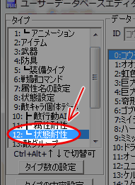
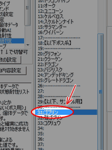
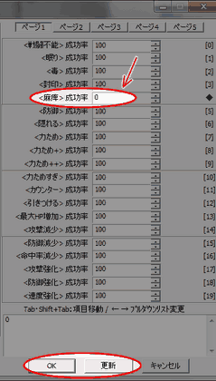
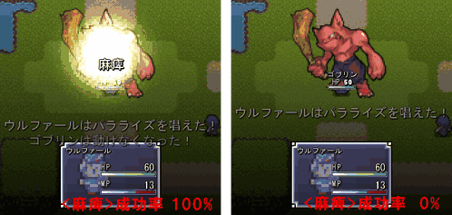

ユーザデータベース
右のようなウィンドウが表示されます。

戦闘中のキャラクターに影響を及ぼして、毎ターンHPが減少したり、
眠らせて動けなくしたり、魔法が使えなくなったりするステータス（状態）異常。
魔法使い型の敵キャラクターの魔法を封じたり、
素早い獣のモンスターを動きを遅くしたりして、
戦略性に富んだバトルを作ることは楽しいですが、
主人公の前に立ちはだかる強力なボスが麻痺にかかって動けなくなって、
ボコボコにされてしまうようなことがあるとちょっと情けないですよね。
今回はサンプルゲームにあらかじめ入っている
敵キャラクター「ゴブリン」の麻痺状態への耐性を
強く設定することで、ステータス異常への耐性の設定の仕方を習得します。
| 【1】 ユーザDBを開く ユーザデータベース 右のようなウィンドウが表示されます。 |
|
| 【2】 編集するタイプの選択 ウィンドウが開いた直後は「タイプ」が「技能」になっています。 今回の設定はユーザデータベースの12番「┗ 状態耐性」で行いますので、 「12:┗ 状態耐性」をクリックして下さい。 |
 |
| 【3】 編集するデータの選択 ウィンドウの中ほどにデータ一覧があります。 データはこの中から「31:ゴブリン」を選択してください。 |
 |
| 【4】 属性への耐性 次に、状態異常が通用する確率を設定します。 今回は「麻痺」状態への耐性を強くしますので、 ウィンドウ右端にある「＜麻痺＞成功率」を編集します。 ページ1の一番上から5つ目にある項目です。 入力欄に「0」（全く効かない）を入力してください。 選択できたらウィンドウ右下のボタン「OK」か「更新」を押して上書きします。 |
 |
| 【5】 テストプレイ ステータス異常耐性を設定出来たら、テストプレイしてみましょう。 テストプレイしたいけど戦闘イベントの作り方が分からないという場合は、 「バトルを発生させたい」を参考にして 敵グループの31番「ゴブリン1匹」をマップイベントなどで呼び出してください。 デフォルトで入っている技能「パラライズ」をゴブリンに対して使ってみると、 麻痺状態にならないことがわかると思います。 主人公に技能「パラライズ」を覚えさせる方法については 「主人公の技の習得レベルを設定したい」を参照してください。 以上でこの記事の内容は終了です。お疲れ様でした。 |
 |
|
■ステータス異常が付与される仕組み 今回はステータス異常を受ける側の耐性を設定しましたが、 状態異常を与える側として、技能と武器にもステータス異常状態を 付与する確率があります。 基本システムにおいて、これらの確率が 計算される順序は技能→(武器)→耐性となっています。 武器の状態付与率は技能とは別枠で計算されているので、 例えば100%麻痺させる武器を装備して100%麻痺を受ける敵に 通常攻撃を行うと、通常攻撃には麻痺判定はありませんが 100%麻痺を付与できます。 また、状態異常攻撃を受ける側ならば、味方の装備や敵に ステータス異常耐性があると それらの耐性が上記の付与確率から引かれます。 |
|
■属性攻撃への耐性の設定 本トピックではステータス異常耐性の設定方法をご紹介しました。 属性攻撃への耐性の設定の仕方については 「敵に弱点・吸収・無効の属性を設定したい」を参照してください。 |
＜執筆者：ウディタ公式ガイド執筆コミュ。＞